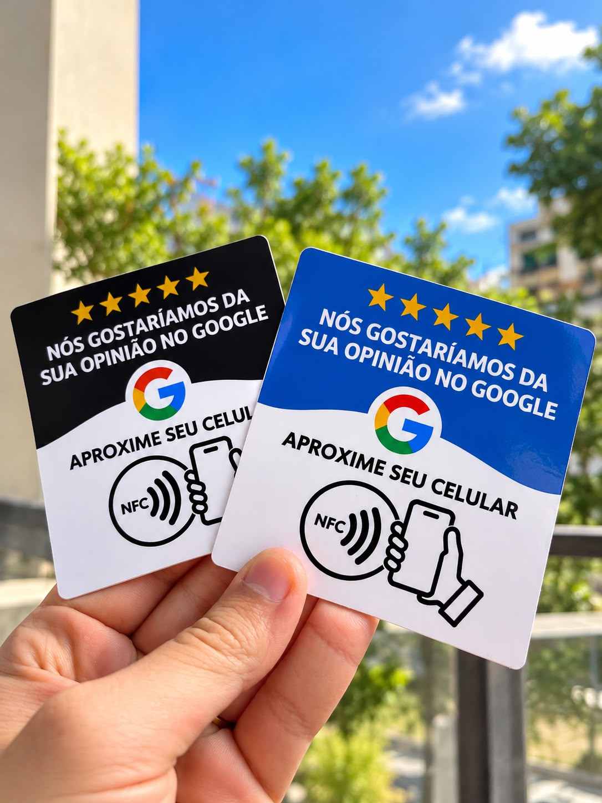

Um toque. Novas possibilidades.
Seu próximo cliente vai escolher você ou o seu concorrente?
Quem procura no Google já está considerando uma compra. Facilite avaliações com a Carchedi NFC, fortaleça sua reputação e dê ao cliente mais motivos para escolher seu negócio.
Veja a diferença na práticaMais fácil avaliar. Mais motivos para escolher você.
A disputa começa na busca
Aparecer antes do concorrente
é uma chance de ser escolhido antes.
Um perfil bem posicionado coloca sua empresa no caminho de quem procura. Boas avaliações ajudam a transformar essa atenção em confiança.
Simulação ilustrativa · empresas e números fictícios
Comparação de cenários possíveis, não um antes e depois da placa. O ranking também depende da relevância da empresa para a busca, da distância e de sua popularidade. Mais avaliações não garantem a primeira posição.
Segundo o Google, mais avaliações e notas positivas podem ajudar no ranking local. Entenda os critérios do Google.

Menos etapas. Mais facilidade.
Da aproximação à avaliação.
Seu cliente aproxima o celular
Com NFC ativado em um aparelho compatível, basta aproximar da placa. A câmera também pode ler o QR Code.
O perfil do seu negócio abre
O link leva à página de avaliação da sua empresa no Google, sem precisar procurar pelo nome.
Uma experiência vira confiança
O cliente compartilha sua opinião. Outras pessoas podem conhecer seu negócio pela experiência de quem já comprou.
Seu atendimento já tem valor. Mostre isso.
O elogio no balcão pode
ajudar na próxima venda.
Seu cliente gostou do atendimento? Aproveite esse momento para convidá-lo a contar sua experiência no Google. A placa deixa o link de avaliação ao alcance de um toque.
Esses relatos ajudam novos clientes a conhecer sua empresa antes da primeira visita. Uma reputação mais forte pode ajudar você a competir pela preferência de quem está pronto para comprar.
A Carchedi NFC facilita o acesso à avaliação. Não garante notas, posicionamento ou faturamento.
Um exemplo para visualizar
Pequenas conversões.
Receita que pode somar.
Imagine que sua empresa conquiste 5 vendas extras no mês, com um valor médio de R$ 100 por compra. Isso representa R$ 500 a mais de faturamento bruto.
Exemplo hipotético, não uma previsão de resultado da placa. Faturamento não é lucro: é preciso descontar custos e despesas.
Acompanhe na prática
Saiba o que está funcionando.
Anote quantas avaliações recebe, quantos contatos chegam pelo Google e quantas vendas esses contatos geram. Pergunte aos novos clientes como conheceram seu negócio.
Compare períodos semelhantes e considere mudanças de preço, promoções e sazonalidade. Assim, você acompanha a evolução sem atribuir toda venda à placa.
Quem está por trás da Carchedi NFC
Prazer, sou o Leandro.
Leandro Carchedi · Carchedi NFCTrabalho com marketing e já ajudei empresas a aumentar seu faturamento. Nesse caminho, percebi uma oportunidade aqui em Juiz de Fora, onde moro: ajudar empreendedores e comerciantes a transformar o bom atendimento em uma presença mais forte no Google.
Muitos negócios entregam uma ótima experiência, mas isso nem sempre aparece nas avaliações. Enquanto isso, quem está procurando onde comprar pode acabar escolhendo um concorrente que se destaca mais na busca.
Com a plaquinha NFC para avaliações no Google, o convite para avaliar entra na sua rotina de atendimento. Seu cliente aproxima o celular, acessa o link e pode compartilhar uma opinião sincera sobre sua empresa.
A ideia é fortalecer sua reputação e suas chances de aparecer bem nas buscas locais, sem depender só de grandes investimentos em tráfego pago. Avaliações e notas positivas podem ajudar no posicionamento, junto com outros fatores que o Google considera.
Quer aproveitar melhor o atendimento que você já oferece? Fale comigo e descubra como colocar a placa NFC para trabalhar a favor do seu negócio.
Fale com Leandro pelo WhatsApp.
Rever como funciona ↑Sem complicação
Antes do primeiro toque.
Precisa instalar um aplicativo?
Para ler NFC ou QR Code, normalmente não. O link abre no navegador ou no Google Maps. Para publicar uma avaliação, é necessário estar conectado a uma conta Google e ter internet.
Funciona em qualquer celular?
A aproximação depende de NFC compatível e das configurações do aparelho. O QR Code é uma alternativa para celulares com câmera e leitor de QR Code.
O cartão e a placa fazem a mesma coisa?
O cartão que você recebeu apresenta a Carchedi NFC. A placa no balcão do seu negócio pode levar seus clientes ao link de avaliação da sua própria empresa.
É um produto oficial do Google?
Não. É uma solução independente que usa NFC e QR Code para abrir o link de avaliação do seu negócio. Google é uma marca de seu respectivo titular.
Como devo pedir avaliações?
Convide seus clientes a compartilhar opiniões sinceras, sem oferecer recompensas e sem selecionar apenas quem teve uma experiência positiva.